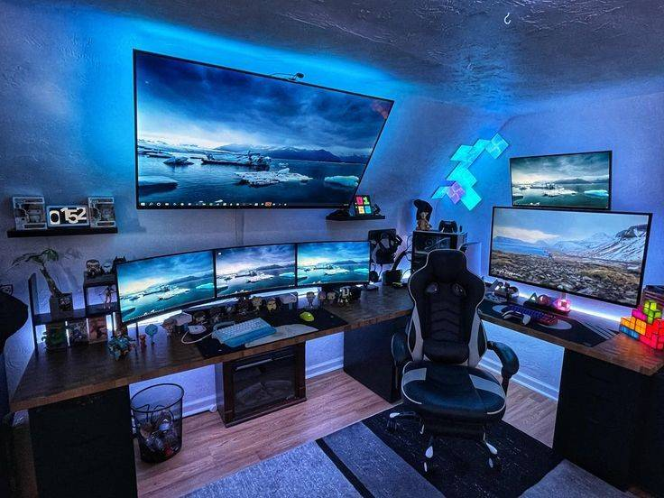
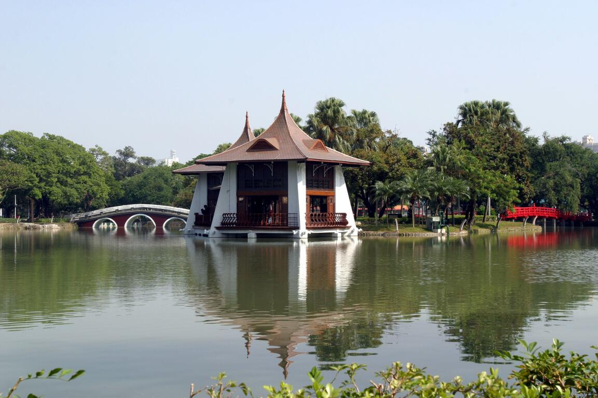
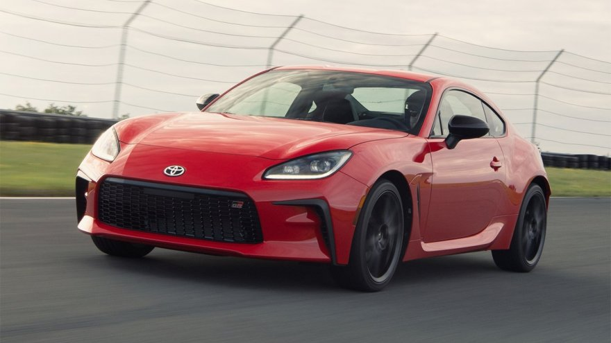

成長歷程 // Timeline
幼時
我認為自己小時候是幸福的，整天只要知道玩就可以了，完全沒有甚麼是我需要煩惱的。不需要去擔心自己是否會不會沒有飯吃，或是生計壓力的問題，也不需要去擔心自己的未來到底會如何，只能說非常的單純。
青年
到了這階段開始會去思考一些問題，例如之後會想從事什麼職業、有沒有甚麼想做的事。甚至會開始關心自己的一些事，不再是像之前一樣整天都在玩，漸漸地開始會去做規劃，並且有時總會幻想自己未來會是甚麼樣子。
成年
成年了，思想也逐漸成熟，開始逐漸能夠體會父母身上所擔的壓力，體會到父母的辛苦。很多事情都要為自己負責，不是一昧地尋求庇護，對於未來的規劃也必須更完善，更有計畫性的去朝目標一步步前進。
興趣喜好 // Interests
籃球
打籃球時，我感到極度興奮且全情投入。在比賽中，我能忘卻生活上的煩惱，全神貫注於比數、隊友和對手。籃球讓我不僅保持健康，還培養了團隊合作和領導才能。
電玩
打電玩時，我感到充滿愉悅和興奮。遊戲帶來了一種激情洋溢的心情，好比踏入一個奇幻的世界。而與朋友一同遊玩時，競技和合作讓我感到親近和互動的滿足。
看電影
觀看科幻電影時，我感到興奮且充滿好奇。這些電影打開了通往未知宇宙和未來的大門。科幻電影引發深思，探討人類存在、技術發展和外星文明等主題。
生長城市 // Hometown
台中 Taichung
臺中位於臺灣西半部的樞紐位置，四季氣候宜人。現代與傳統相互融合，在尋古訪幽之餘，國立臺灣美術館、國立自然科學博物館與臺中市文化局共築成美學、文化與知識的鐵三角。林立的百貨公司、各有特色的商圈，都讓臺中市有如巴黎香榭大道的優雅浪漫。這座充滿文化饗宴的城市，總能帶給人們驚豔又餘味繚繞的體驗。

未來目標 // Vision

成為一名 AI 工程師
成為一名 AI 工程師一直是我的夢想。AI 的崛起改變了我們的世界，並為解決複雜的問題提供了新的可能性。
我希望能參與這場革命，設計智能系統，改善生活品質，促進科學研究，並應對全球挑戰。我熱衷於學習機器學習、深度學習和自然語言處理等 AI 領域的知識和技能。
我將不懈努力，參與項目，解決難題，並保持對創新的開放態度。對我來說，這是實現夢想的最佳途徑。